Создание игр в Roblox Studio
Программирование на Lua. Основы работы с интерфейсами
Интерфейсы
В этом и следующем занятиях мы немного отвлечёмся от работы с непосредственным программированием и посмотрим на другую часть взаимодействия игрока и игры, а именно - на работу с интерфейсами. Интерфейс - неотъемлемая часть как любой игры, так и любой программы в целом, позволяющая человеку взаимодействовать с компьютером.
В общем понимании интерфейс можно описать как любое графическое отображение информации внутри программы. Когда вы запускаете Windows, на экране загружается графический интерфейс операционной системы и вместо массива нулей и единиц, которым на самом деле она является, перед вами оказываются красивые папки, ярлыки, курсор мыши и окна приложений.
Любой интерфейс создан для того, чтобы визуально сообщить человеку, что именно происходит с программой и как он может с ней работать, это включает в себя абсолютно все видимые элементы, организованные в одну систему - Меню, Внутриигровой Интерфейс, отображающий здоровье, количество патронов и иконки умений, меню инвентаря, окно крафта и т.п.
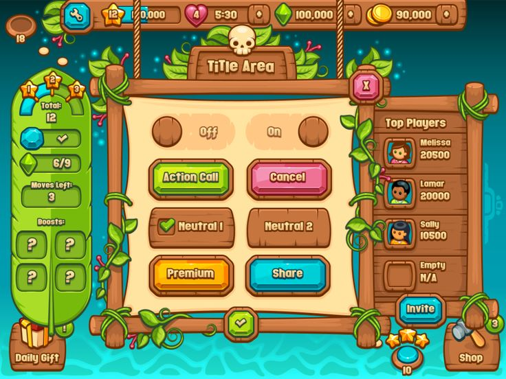Разработкой и дизайном интерфейсов занимается отдельный специалист, который называется дизайнер интерфейсов или UI/UX-дизайнер. Это отдельная профессия, главная цель которой сделать так, чтобы человек максимально удобно и понятно, в идеале, даже не задумываясь над своими действиями, мог взаимодействовать с игрой или программой.
Мы поработаем с двумя видами интерфейсов внутри Roblox Studio: стандартным экранным интерфейсом и интерфейсом, который наносят на объекты.
В этих занятиях мы будем использовать новый проект. В нём мы будем создавать небольшой командный шутер, реализуем систему разделения на команды, которую мы запрограммируем на следующем занятии, а также научимся наносить надписи на объекты внутри игры и создавать таким образом свои собственные поясняющие знаки, подобные тем, которые вы видели в предыдущих занятиях.
Объектные интерфейсы. Добавление надписей
Подготовка детали
В первую очередь нам предстоит научиться наносить надписи на детали, чтобы у нас была возможность координировать действия игроков и объяснять им, что именно нужно делать. Roblox позволяет создавать интерфейсы, которые можно наносить на объекты, подобно текстурам или декалям, и делать из них полноценные системы ввода команд внутри игры (например, панели ввода кодовых замков, тач-экраны и подобные интерактивные объекты).
В этой части занятия мы создадим висящую табличку, которая будет сообщать игрокам, в какую команду они попали и в какую сторону им бежать, а также демонстрировать, на какой базе они находятся.
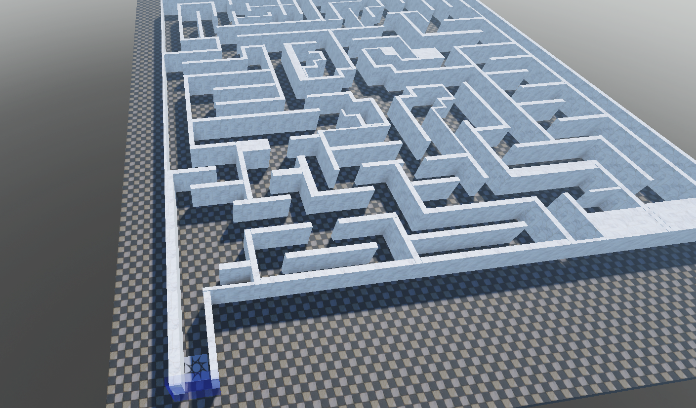Создадим стандартный прямоугольный part и разместим его над землёй так, чтобы он парил в воздухе:
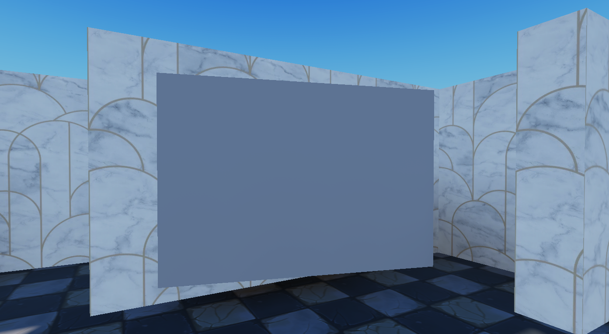Чтобы получить возможность наносить графические элементы на деталь и создавать впоследствии из них сложные системы, необходимо создать для неё специализированный дочерний объект - SurfaceGui. Он позволяет Roblox понять, что на одну из граней выбранной детали будет добавлен интерфейс.
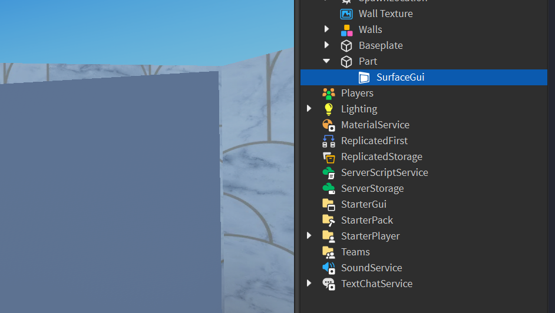Добавим к детали объект SurfaceGui, а после этого создадим для него дочерний элемент Frame:
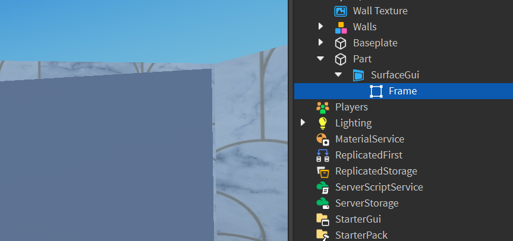Frame - это объект-контейнер. Он используется для того, чтобы располагать на нём другие элементы интерфейса.
Самая близкая к нему аналогия - это лист бумаги. Если нужно что-то нарисовать, например, треугольник или круг, вам понадобится поверхность, на которую вы будете их наносить.
Любая графическая форма не может находиться просто в пространстве без объекта, на который она будет нанесена. Именно этим объектом и является Frame - это «лист бумаги», на котором вы «рисуете» элементы интерфейса.
Технически, можно создавать элементы интерфейса и без него, однако в таком случае будет достаточно сложно выстраивать из них какие-то более сложные системы, поэтому желательно сразу же приучиться к работе с данным объектом.
Элемент Frame
После того, как Frame добавлен, все последующие объекты должны создаваться в дочернем отношении к нему, таким образом они все будут «нарисованы» на этом фрейме и будут составлять одну общую группу.
Возможно, после добавления SurfaceGui и Frame, интерфейс будет расположен на неправильной стороне детали. Чтобы это исправить, нужно выбрать SurfaceGui и в окне Properties изменить параметр Face, подобно тому, как это работает в источниках света или в декалях.
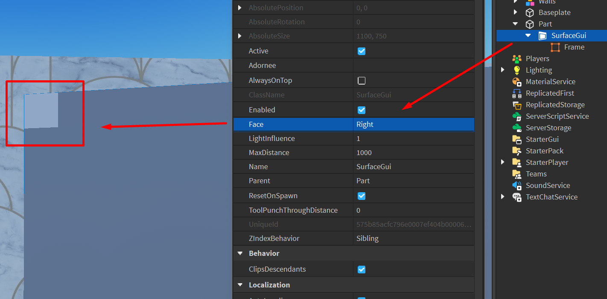На поверхности детали появилась прямоугольная область, заполненная белым цветом. Это и есть Frame, но он недостаточно большого размера и находится в левом верхнем углу. Нужно переместить его в центр и увеличить в размере.
Положение и размер элементов. Параметры Offset и Scale
В окне Explorer выберем Frame и в окне Properties найдём параметр Position - именно этот параметр отвечает за положение объекта на поверхности родительской детали. Если посмотреть на текущее значение, то можно увидеть странную запись - {0,0},{0,0}.
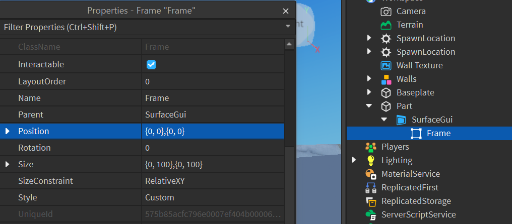Есть два варианта того, как задаётся расположение любого графического элемента - точный и относительный. Чтобы разобраться с тем, как это работает, раскроем список значений, нажав на небольшую стрелку слева от параметра. Также раскроем параметры Х и Y - внутри найдём параметры Offset и Scale.
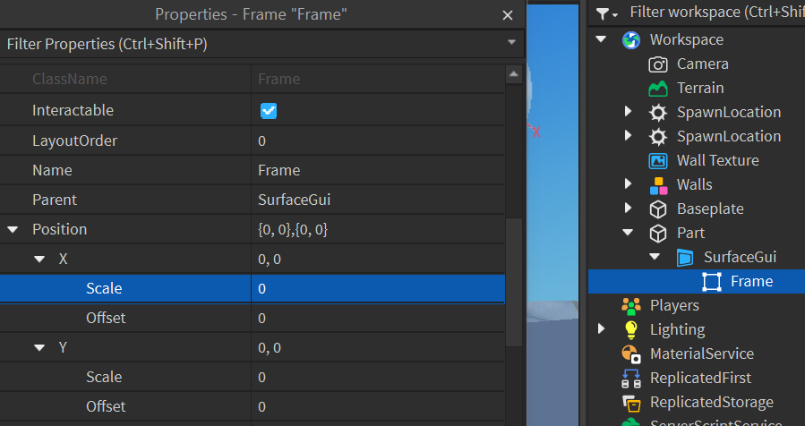Оба этих параметра изменяют положение объекта по указанной оси (Х - слева-направо, Y - сверху-вниз), однако работают на основе разных принципов.
Параметр Offset указывает точное положение объекта от левого верхнего угла в пикселях.
Этот параметр используется, когда необходимо указать точное и неизменное положение объекта на поверхности. Так, если установить значение этого параметра равным 100 по оси Х, объект всегда будет сдвинут от левой границы на 100 пикселей, даже если родительская деталь станет меньше или больше, это значение и положение элемента останется неизменным.
Параметр Scale позволяет указать положение объекта в процентном соотношении. Вы можете сказать, что, каким бы ни был размер вашей родительской детали, объект всегда будет находиться на заданном процентном соотношении от общей длины, считая от левого края.
При изменении размеров родительской детали, ширина отступа также будет изменяться. Например, если отступ от левого края всегда должен быть 10%, для детали длиной 100 единиц этот отступ будет равен 10. Но, если уменьшить деталь до 50 единиц в длину, отступ автоматически уменьшится и станет равен 5.
Таким образом, мы можем реализовать адаптивную вёрстку - подход, являющийся на данный момент общепринятым стандартом в дизайне интерфейсов.
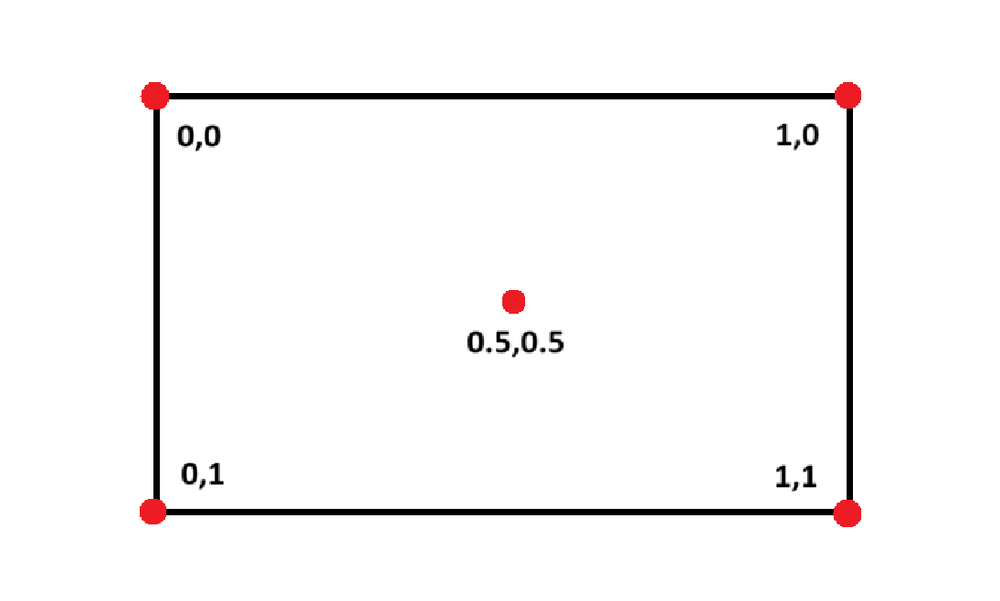Этот параметр принимает значения от 0 до 1. Как и другие параметры такого вида, 0 = 0 %, а 1 = 100 %. Все десятичные значения между ними будут соответствовать какому-то количеству процентов (0.32 = 32%, 0.07 = 7%, 0.99 = 99%).
Нам необходимо расположить Frame ровно посередине детали, значит положение должно быть постоянно удалено от левого верхнего угла на 50%. То есть значение параметра Scale по обеим осям должно быть равно 0.5.
Изменим значения Scale по Х и Y:
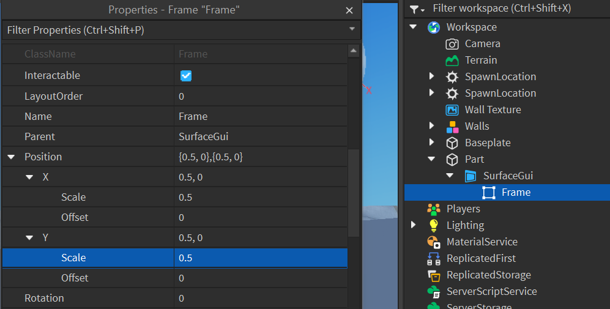Frame переместится в середину детали, но невооруженным глазом заметно небольшое смещение.
Параметр AnchorPoint
Смещение фрейма происходит из-за того, что по умолчанию любой объект отрисовывается от левой верхней точки, и именно эта точка сейчас находится в центре, а нам нужно сделать так, чтобы там находился сам центр фрейма.
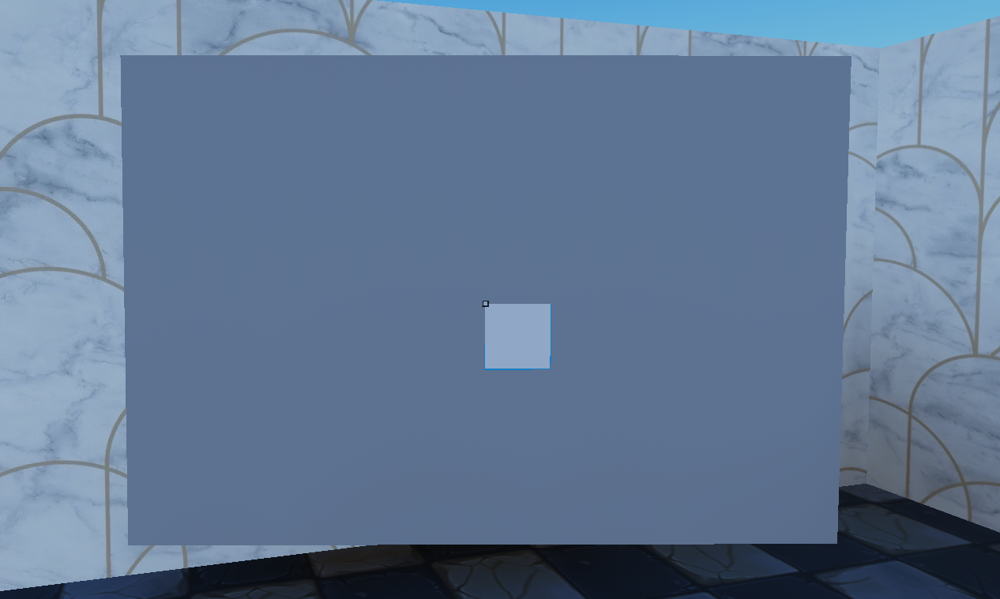Чтобы это исправить, нужно указать, что центр объекта находится не в левом верхнем углу, а в его середине.
За это отвечает параметр AnchorPoint, найдём его в окне Properties. Этот параметр состоит из двух значений, которые указывают, где именно находится базовая точка элемента.
Логика этих значений такая же, как и у параметров Scale - по умолчанию они установлены в значения 0,0, то есть объект рисуется от левой верхней точки. Если изменить эти значения на 1,1, объект будет отрисовываться от правого нижнего угла.
Чтобы перенести базовую точку в центр, необходимо установить эти значения на 50% по каждой оси, то есть 0.5,0.5. Изменив это значение, вы увидите, что Frame отцентровался относительно середины детали.
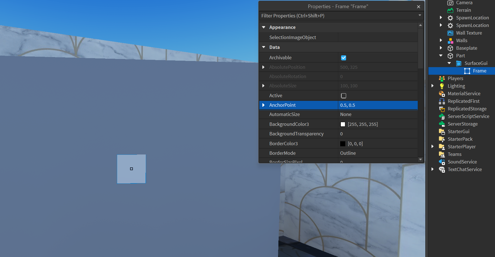Настройка размера фрейма
Следующее, что нужно изменить - размер фрейма. Найдём параметр Size в окне Properties. Внутри этого параметра также есть значение X и Y, которые работают схожим образом с Position. Как и ранее, мы будем использовать параметр Scale для указания относительных размеров фрейма.
Установим параметры Offset для обеих осей равными 0 и изменим значение Scale по осям Х и У на 0.8. Теперь фрейм всегда будет занимать 80% от общей ширины и высоты детали.
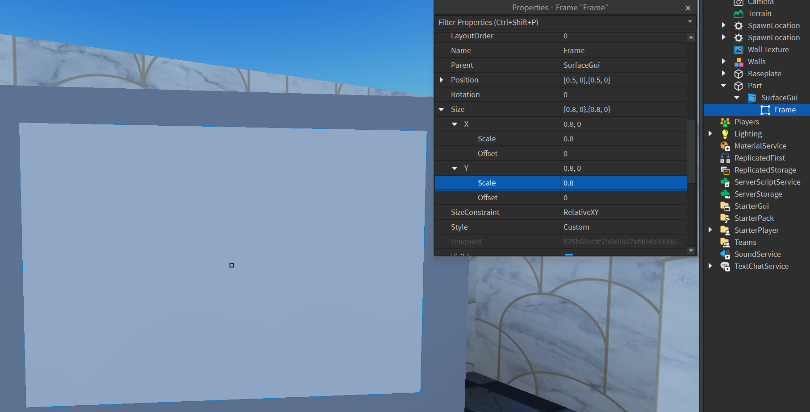После этого можно поработать с внешним видом и настроить параметры, отвечающие за цвет и прозрачность таблички.
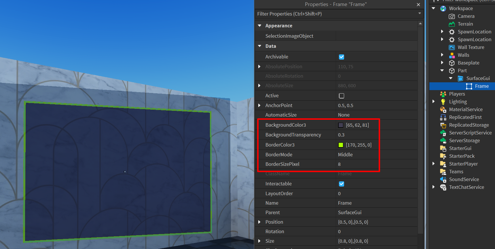Добавление надписи
Добавим надпись. Чтобы это сделать, выберем Frame в окне Explorer и добавим к нему дочерний объект TextLabel:
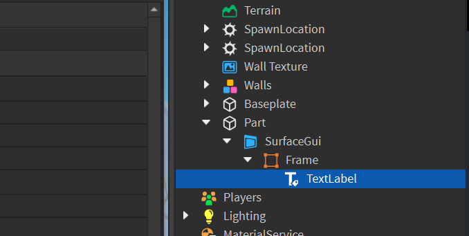Текст также должен быть отцентрован по середине фрейма, настроим его таким же образом, как мы сделали это с фреймом. Установим Position Scale X и У в значение 0.5, AnchorPoint - 0.5,0.5 для выравнивания по центру.
Чтобы текст заполнял весь фрейм, установим Size Scale в значение 1, а Offset сделаем равным 0.
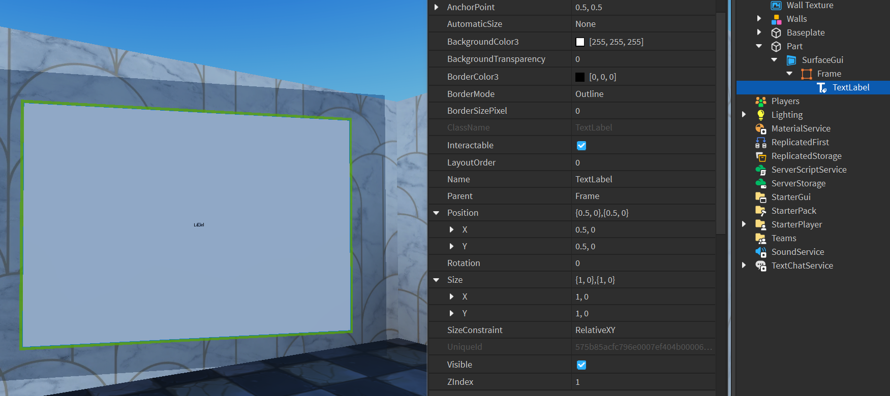После этого поработаем с дизайном надписи, используя параметры шрифта, цвета, прозрачности и т.п.
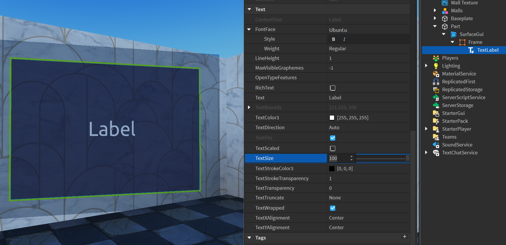Изменим текст надписи с помощью параметра Text. Для того, чтобы добавить переносы строки, можно напечатать текст с переносами в блокноте Windows или любом другом редакторе текста, скопировать его и вставить в поле Text.
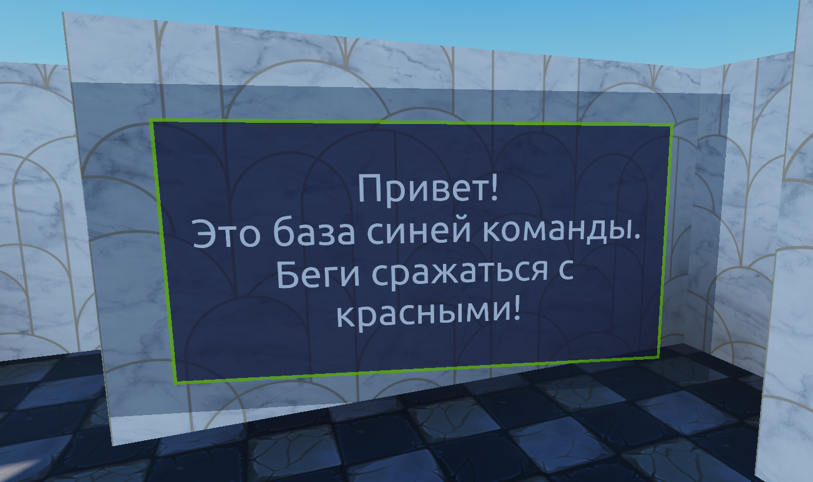Завершим настройку дизайна и сделаем такую же табличку для второй команды.
Экранные интерфейсы
Помимо интерфейсов, которые наносят на объекты, в Roblox также существуют интерфейсы, позволяющие создавать различные меню, всплывающие окна и элементы игрового дизайна. В следующем занятии мы создадим код для системы разделения на команды, но перед этим нам необходимо сделать интерфейс, который будет запускаться при входе на сервер игры и давать соответствующий выбор.
Принцип работы с этим типом интерфейса схож с объектными интерфейсами, за одним исключением - элементы будут проецироваться непосредственно на экран компьютера, благодаря чему мы сможем создать независимое от окружения окно, с которым можно взаимодействовать при помощи мыши.
Объект ScreenGui
Для начала работы необходимо создать специальный объект - ScreenGui. Как и SurfaceGui, он позволяет размещать элементы интерфейса, однако в отличие от второго, ScreenGui работает непосредственно с поверхностью экрана. Чтобы его создать, нужно перейти в другой раздел игровой структуры.
Окно, которое мы создадим, должно появиться, когда пользователь присоединяется к игре. Для таких интерфейсов существует отдельная папка в структуре игры, которая называется StarterGui- в ней хранятся интерфейсы, с которыми может взаимодействовать пользователь.
Откроем окно Explorer и найдём эту папку, затем добавим в неё дочерний объект ScreenGui. Теперь все дочерние ему элементы будут проецироваться непосредственно на плоскость экрана.

Вкладка UI для работы с элементами интерфейса
После этого вы заметите, что вверху окна Roblox Studio добавилась дополнительная вкладка UI с элементами интерфейса - фреймами, кнопками, надписями и т.п. С помощью этих кнопок можно добавлять нужные элементы непосредственно на экран и изменять их положение и размеры при помощи мышки.
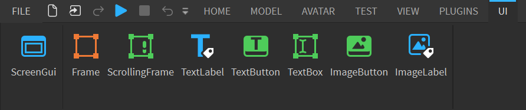Объект Frame. Добавление заголовка игры
Добавим дочерний объект Frame, на который будут проецироваться все последующие элементы. При помощи параметров AnchorPoint, Position и Scale расположим Frame так, чтобы он находился в центре окна и занимал определённое количество экранного пространства в процентах.
В актуальной версии Roblox Studio размеры элементов интерфейса будут автоматически пересчитываться в Scale, если параметр Offset установлен в нулевое значение.
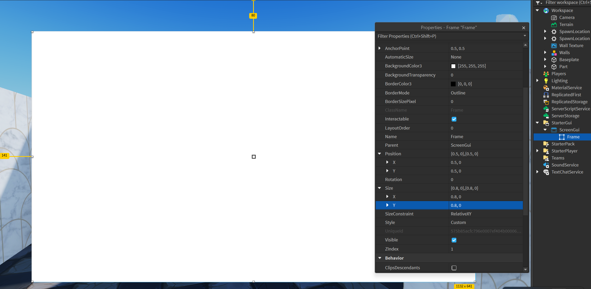Добавим заголовок игры. Выберем Frame и добавим к нему дочерний объект TextLabel.
Нужно убедиться, что последний является именно дочерним объектом к фрейму, в таком случае при перемещении или масштабировании фрейма TextLabel будет перемещаться и масштабироваться вместе с родительским объектом. В противном случае, они будут независимыми друг от друга элементами, и при изменениях размера окна меню будет «разъезжаться» и отображаться неверным образом.
С помощью параметра AnchorPoint переместим центр надписи в середину (установим значение 0.5,0.5) и расположим TextLabel по центру фрейма. В режиме работы с экраном интерфейсом можно делать это мышкой, перетаскивая элементы непосредственно на плоскости экрана.
Изменим текст на название игры и настроим свой дизайн:
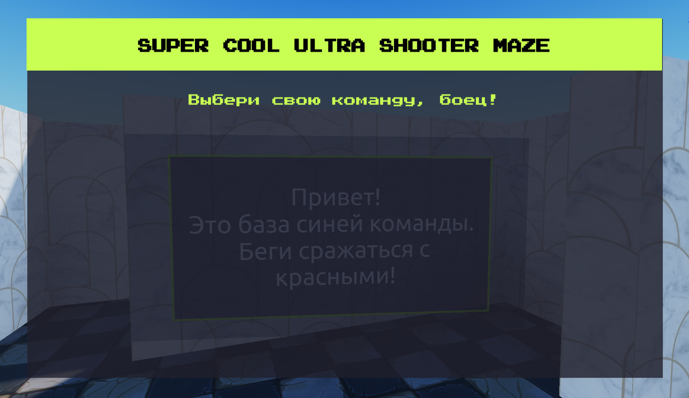Добавление кнопок выбора команды
Последние два недостающих элемента - кнопки выбора команды. Так как они будут идентичны, добавим и настроим сначала одну кнопку, а потом дублируем ее и поменяем для второй команды.
Добавим на экран элемент TextButton, расположим его в подходящем месте и настроим размер так, чтобы на кнопку было удобно нажимать как на компьютере, так и на планшетах и телефонах, устройствах с меньшим дисплеем.
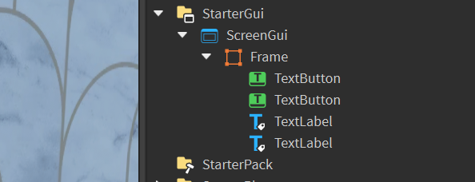После этого настроим внешний вид кнопки так, чтобы она не выбивалась из общей стилистики, изменим шрифт и цвета. Добавим обводку или заливку соответствующего команде цвета, чтобы визуально подсказать игроку правильный выбор. После этого сдублируем получившуюся кнопку и настроим её под вторую команду:
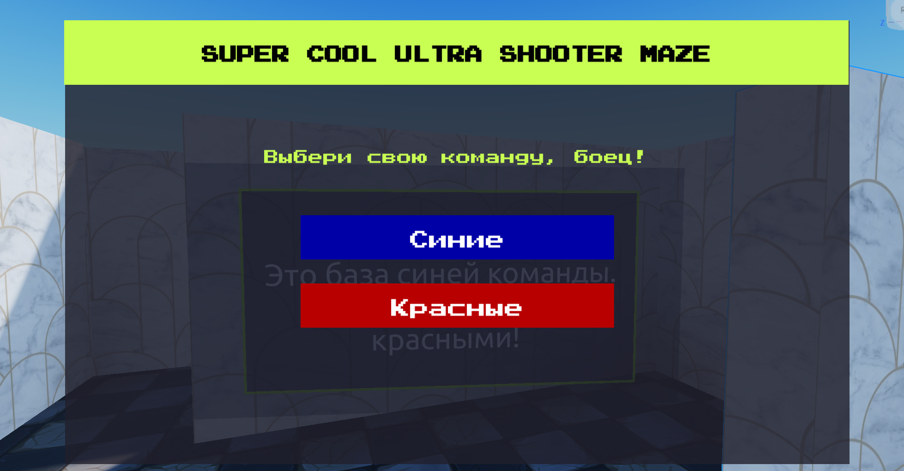Интерфейс готов!
Домашкаа 😁
В качестве домашнего задания необходимо создать 3 надписи с различными сочетаниями цветов, прозрачностью и шрифтами, которые будут добавлены к игровым объектам. Надписи необходимо создавать на отдельных деталях, при попытке использовать SurfaceGui со сложными объектами могут возникнуть непредвиденные трудности :)